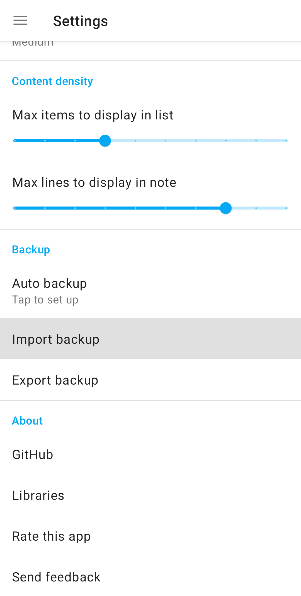
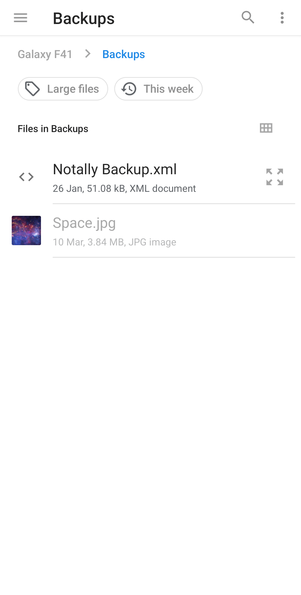
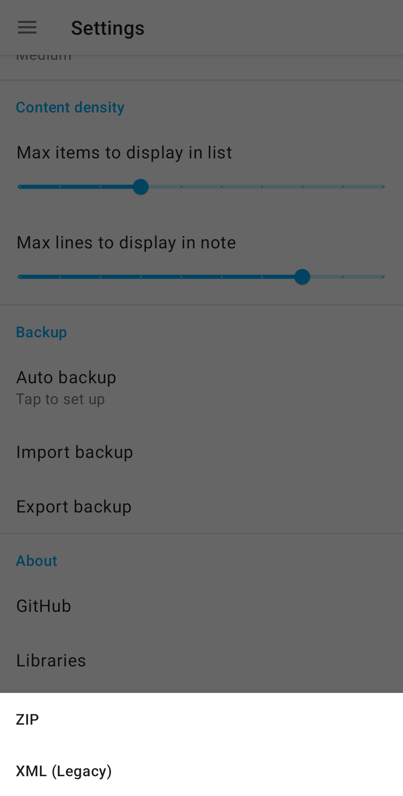
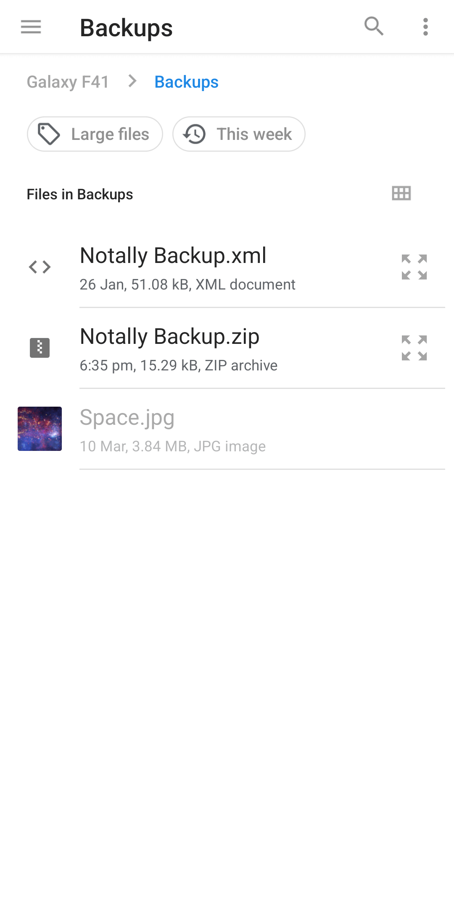
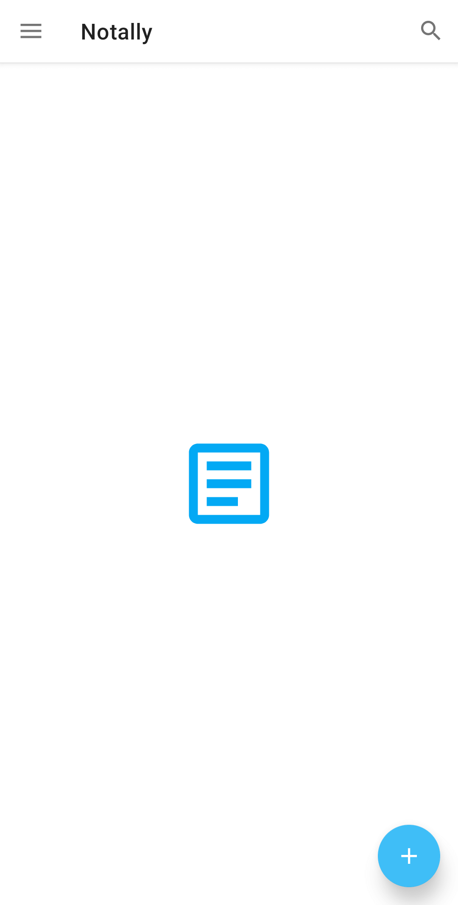
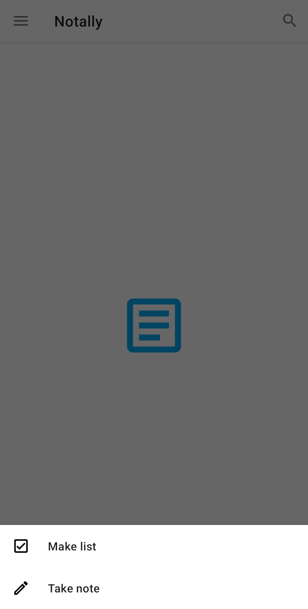
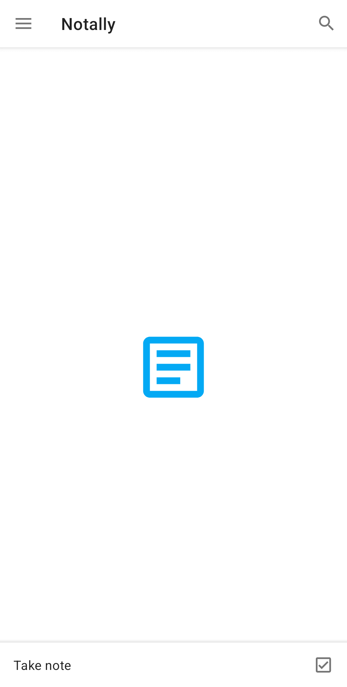

Sunday, 19th March 2023 on Om Godse's blog
Notally has a feature that allows you to export your notes to a single file and then import them back. This is useful if you're changing devices or to create regular backups.
I switched the backup format from XML to ZIP in v4.9. This was to support adding images inside notes, which I'm currently working on. Instead of a backup comprising of multiple files (Images and XML), all of which the user must keep track of, it can be housed in a single ZIP container.
It would be very bad if someone were to update Notally and find out they couldn't import their old backups, so the option to import the legacy XML format is still there.
Notally uses the Software Access Framework to work with the file system. It doesn't require any permissions and is similar to the Save as dialog in Windows. When there was only 1 backup format, it was easy to implement the interface. Users would click on Import backup which would launch a file picker.
|  |  |
val intent = Intent(Intent.ACTION_OPEN_DOCUMENT) intent.type = "text/xml" intent.addCategory(Intent.CATEGORY_OPENABLE) startActivityForResult(intent, requestCode)
As you can see, we've passed text/xml to the picker which makes only XML files selectable. The question now is how to design an interface to support 2 formats. The first idea I had was to add another dialog, after Import backup.
|  |
If the user clicks on XML, launch the picker with text/xml, application/zip for ZIP.
This does seem like a logical step but it's bad design for 2 reasons. The first is that it adds another choice for the user to make. Someone who has switched phones and wants his old notes back isn't interested in that. The second is that people may not even know what file extensions are. Photos are something they see in their gallery, not files with jpg extensions. Documents are things they create with Word or Docs, not files with docx extensions. How do they know a file is a Word document? Because file managers display a Word icon next to it. All they know is they had a file called Notally Backup and they want it back.
I couldn't think of a better way at the time so I released it. However, it remained at the back of my mind. Some time later, I was going through the documentation for ACTION_OPEN_DOCUMENT and found out we can specify multiple mime types for the picker.
val intent = Intent(Intent.ACTION_OPEN_DOCUMENT)
intent.type = "*/*"
intent.putExtra(Intent.EXTRA_MIME_TYPES, arrayOf("application/zip", "text/xml"))
intent.addCategory(Intent.CATEGORY_OPENABLE)
startActivityForResult(intent, REQUEST_IMPORT_BACKUP)
|  |
Voila! Both XML and ZIP files are selectable and 1 extra dialog has been removed. On a similar note, I've also changed how new notes and lists are created. Previously, you would click on the blue FAB and a dialog would show up. Now, both options are available right on the home screen.
| Before | After | |
|---|---|---|
|  |  |  |
These updates have been released in v5.2. Get it from Play Store, F Droid, or GitHub releases.
Wednesday, 5th July 2023
I've brought back the blue button. It seems that the grey checkbox icon wasn't intuitive, a lot of users thought that the option to make lists had disappeared.